Chapter 2 Visualizing Data
In this chapter, we’ll take a look at how to visualize data using the ggplot2 package developed by Hadley Wickham.
2.1 To do list
- section on how to manipulate legends
- use section headers to structure an R file –> learn shortcuts to run code sections
- mention the “overlapping problem”" when making plots with points and errorbars
- look at Nathalia Velez’s solution
- play around with gui to get a better sense for
library("ggplotgui") ggplot_siny(mpg) - add something about colors:
scale_color_brewer(palette = "Accent")- more about color scales: https://ggplot2.tidyverse.org/reference/scale_brewer.html
- labeling points in plots
2.2 Learning objectives
After working through this chapter, you will be able to:
2.3 Resources
Data camp tutorials - ggplot2 datacamp course -
Books
- R graphics cookbook –> quick intro to the the most common graphs
- R for Data Science book
+ Data visualization chapter
+ Graphics for communication chapter
- Data Visualization – A practical introduction (by Kieran Healy)
- Fundamentals of Data Visualization –> very nice resource that goes beyond basic functionality of ggplot and focuses on how to make good figures (e.g. how to choose colors, axes, …)
2.4 Why visualize data?
…make both calculations and graphs. Both sorts of output should be studied; each will contribute to understanding. F. J. Anscombe, 1973

Figure 2.1: Eight different data sets, same high-level stats.
The data sets for the eight different plots in Figure 2.1 all share the same mean and standard deviations (SD) (shown in Table 2.1).
| variable | mean | SD |
|---|---|---|
| x | 54.02 | 14.52 |
| y | 48.09 | 24.79 |
All data sets also have the same correlation coefficient of \(r = .32\). Clearly, the data sets are not the same though. To get a better understanding of what’s going on in our data, we should look at the data.[^1] [^1]: Here is the paper from which I took the figure. It shows more interesting examples for how summary statistics and some kinds of plots are insufficient to get a good sense for what’s going on in the data.box
2.4.1 Why use R to visualize data?
R makes it easy to visualize data in many different ways.
- reproducible
- powerful way of quickly looking at data in many different ways
- ideally, no need to use anything else
- can write complete papers in R
- change the pdf which then is updated in latex
2.5 Bad visualizations
Below are some examples of visualizations that could be improved. How would you make them better?

Figure 2.2: Example of a bad plot (from Data Visualization – A practical introduction by Kieran Healy)
How could Figure 2.2 be improved?
2.6 Data visualization using ggplot2
We will use the ggplot2 package to visualize data. By the end of this chapter, you’ll be able to make a figure like this:
Figure 2.3: What a nice figure!
Now let’s figure out how to get there.
First, we install ggplot2. Actually, instead of only installing ggplot2 we will install all the packages within the tidyverse. The tidyverse is a suite of packages that we’ll make heavy use of. To install this package in R, we run the following command in the console in RStudio:
Now, let’s open a new R Script file: File -> New File -> R script. You can also use the keyboard shortcut ⌘ Command + shift + n In my own workflow, I use keyboard shortcuts a lot. It helps me keep my hands on the keyboard and get things done faster. If you find yourself repeatedly doing the same thing over and over again, it’s worth defining a shortcut that makes this easier.
In the newly opened file, load the tidyverse library (which contains ggplot2).
R already comes equipped with many useful plotting functions. The ggplot2 library provides a unified framework for defining plots – it defines a grammar of graphics.
2.6.1 Setting up a plot
We start by setting up the plot. To do so, we pass a data frame to the function ggplot() in the following way.
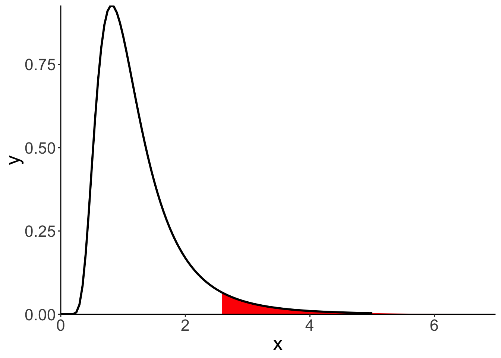
This, by itself, won’t do anything yet. We also need to specify what to plot. Let’s take a look at the diamonds.
head(diamonds)
#> # A tibble: 6 x 10
#> carat cut color clarity depth table price x y z
#> <dbl> <ord> <ord> <ord> <dbl> <dbl> <int> <dbl> <dbl> <dbl>
#> 1 0.23 Ideal E SI2 61.5 55 326 3.95 3.98 2.43
#> 2 0.21 Premium E SI1 59.8 61 326 3.89 3.84 2.31
#> 3 0.23 Good E VS1 56.9 65 327 4.05 4.07 2.31
#> 4 0.290 Premium I VS2 62.4 58 334 4.2 4.23 2.63
#> 5 0.31 Good J SI2 63.3 58 335 4.34 4.35 2.75
#> 6 0.24 Very Good J VVS2 62.8 57 336 3.94 3.96 2.48The head()command allows us to just look at the first six rows of the data frame. Let’s take a look at how much differently colored diamonds cost.
Since this is a dataset that comes with a package, we can also call the help function on it to find out more about it.
Tip: To see the help file, hover over a function (or dataset) with the mouse (or select the text) and then press
F1.
data = diamonds
Let’s take a look at how much diamonds of different color cost. The help file says that diamonds labeled D have the best color, and diamonds labeled J the worst color (I’m not quite sure what a “bad” color is for a diamond …). Anyhow, let’s make a bar plot that shows the average price of diamonds for different colors.
We do so via specifying the plot aesthetics with the function aes(). We need to tell aes() what we would like to display on the x-axis, and the y-axis of the plot.
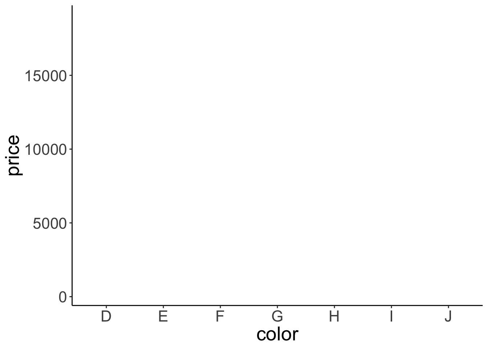
Here, we specified that we want to plot color on the x-axis, and the average price on the y-axis. However, we still need to specify how to plot it. Let’s make a bar graph.
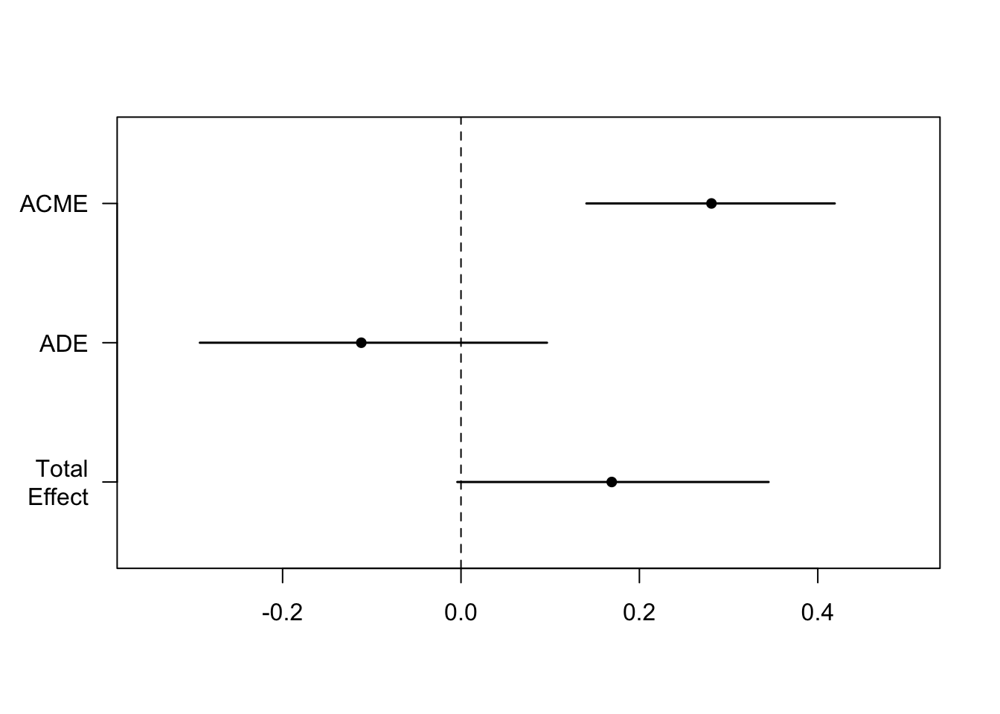
Neat! Two lines of code produce an almost-publication-ready plot (to be published in the Proceedings of Expensive Diamonds)! Note how we used a + at the end of the first line of code to specify that there will be more. This is a very powerful idea underlying ggplot2. We can start simple and keep adding things to the plot step by step.
We used the stat_summary() function to define what we want to plot (the “mean”), and how (as a “bar” chart). Let’s take a closer look at that function.
Not the the easiest help file … We supplied two arguments to the function, fun.y = and geom =.
- The
fun.yargument specifies what function we’d like to apply to the data for each value of x. Here, we said that we would like to take themeanand we specified that as a string. - The
geomargument specifies how we would like to plot the result, namely as a “bar” plot.
Instead of showing the “mean”, we could also show the “median” instead.
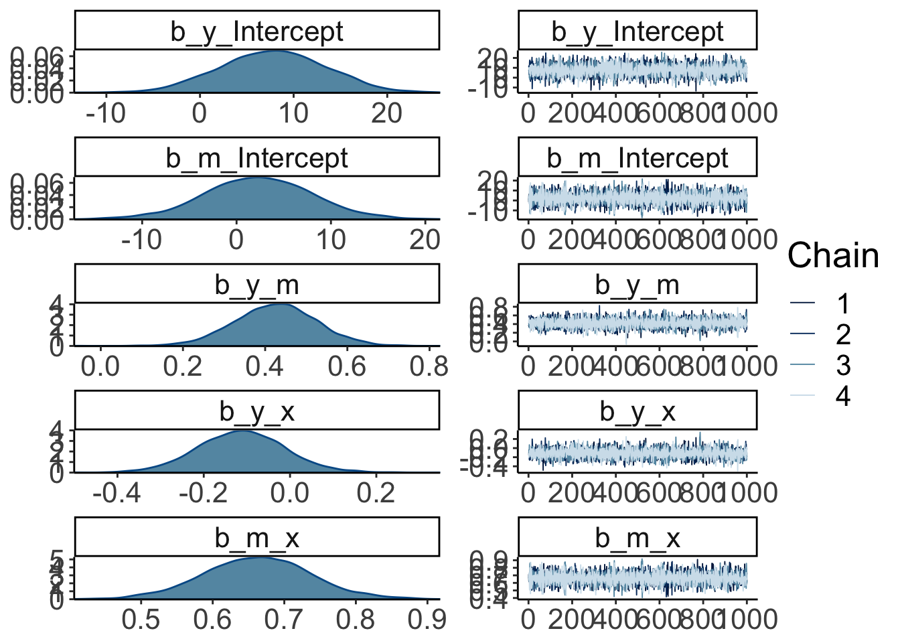
And instead of making a bar plot, we could show some points instead.

Tip: Take a look here to see what other geoms ggplot2 supports.
Somewhat surprisingly, diamonds with the best color (D) are not the most expensive ones. What’s going on here? Well, the diamonds not only differ in color, the differ along other dimensions as well. Let’s take another look at the data.
2.6.2 Scatter plot
I don’t know much about diamonds, but I do know that diamonds with a higher carat value are better. color was a discrete variable with seven different values. carat, however, is a continuous variable. We want to see how the price of diamonds differs as a function of the carat value. Since we are interested in the relationship between two continuous variables, plotting a bar graph doesn’t really make much sense here. Instead, let’s make a scatter plot. Let’s put the carat value on the x-axis, and the price on the y-axis.

- make clear that we didn’t need to summarize anything here – we are just directly plotting the data
Cool! That looks sensible (even though it’s unclear whether paying over $15,000 for a sparkly stone makes sense). Diamonds with a higher carat value have a higher price. Our dataset has 53940 rows. So the plot actually shows 53940 circles even though we can’t see all of them since they overlap.
Let’s make some progress on trying to figure out why the diamonds with the better color weren’t the most expensive ones on average. We’ll add some color to the scatter plot in Figure ??. We color each of the points based on the diamond’s color. To do so, we pass another argument to the aesthetics of the plot via aes().

Aha! Now we’ve got some color. Notice how in Figure ?? ggplot2 nicely added a legend for us, thanks! We’ll see later how to play around with legends. Form just eye-balling the plot, it looks like the diamonds with the best color (D) tended to have a lower carat value, and the ones with the worst color (J), tended to have the highest carat values.
There are many other things that we can define in aes(). Take a quick look at the vignette:
2.6.3 Making a line plot
What else do we know about the diamonds? We actually know the quality of how they were cut. The cut variable ranges from “Fair” to “Ideal”. First, let’s take a look at the relationship between cut and price. This time, we’ll make a line plot instead of a bar plot (just because we can).
ggplot(data = diamonds, aes(x = cut, y = price))+
stat_summary(fun.y = "mean", geom = "line")
#> geom_path: Each group consists of only one observation. Do you need to
#> adjust the group aesthetic?
Oops! All we did is that we replaced x = color with x = cut, and geom = "bar" with geom = "line". However, the plot doesn’t look like expected. What happened here? The reason is that the line plot needs to know what points to connect. The error message tells us that each group consists of only one observation. Let’s adjust the group asthetic to fix this.
ggplot(data = diamonds, aes(x = cut, y = price, group = 1))+
stat_summary(fun.y = "mean", geom = "line")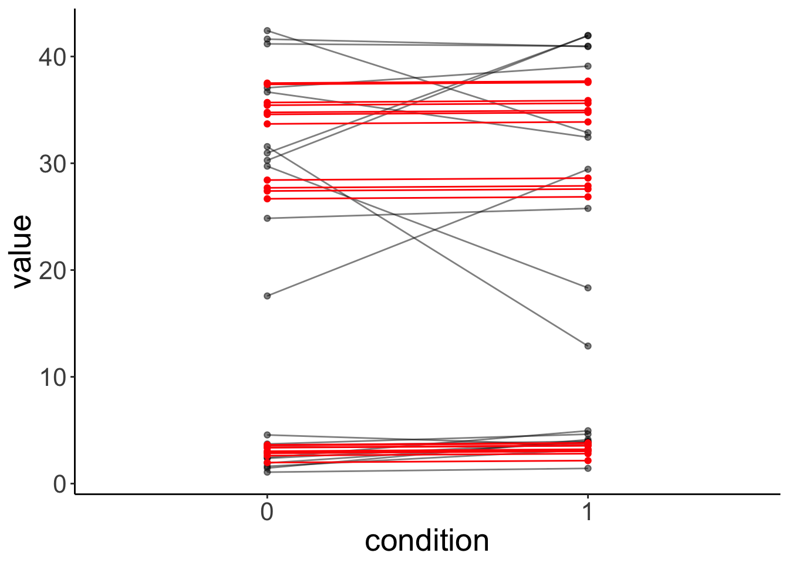
By adding the parameter group = 1 to aes(), we specify that we would like all the levels in x = cut to be treated as coming from the same group. We’ll learn more about grouping below.
2.6.4 Adding error bars
We often don’t just want to show the means but also give a sense for how much the data varies. ggplot2 has some convenient ways of specifying error bars. Let’s take a look at how much price varies as a function of clarity (another variable in our diamonds data frame).
ggplot(data = diamonds, aes(x = clarity, y = price))+
stat_summary(fun.data = "mean_cl_boot", geom = "linerange")+ # plot bootstrapped error bars first
stat_summary(fun.y = "mean", geom = "point") #add points with means
Here we have it. The average price of our diamonds for different levels of clarity together with bootstrapped 95% confidence intervals. How do we know that we have 95% confidence intervals? That’s what mean_cl_boot() computes as a default. Let’s take a look at that function
Remember that you can just select the text (or merely put the cursor over the word) and press F1 to see the help. The help file tell us about the function smean.cl.boot in the Hmisc package. The mean_cl_boot() function is a version that works well with ggplot2. We see that this function takes as inputs, the confidence interval conf.int, the number of bootstrap samples B, and some other ones that we don’t care about for now. So let’s make the same plot again with 99.9% confidence intervals, and 2000 bootstrap samples.
ggplot(data = diamonds, aes(x = clarity, y = price))+
stat_summary(fun.data = "mean_cl_boot", geom = "linerange", fun.args = list(conf.int = .999, B = 2000))+ # plot bootstrapped error bars first
stat_summary(fun.y = "mean", geom = "point") #add points with means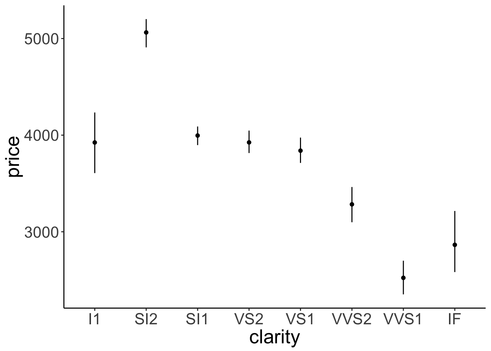
Note how the error bars are larger now compared to Figure #. Note the somewhat peculiar way in which we supplied the parameters to the mean_cl_boot function. The fun.args argument takes in a list of arguments that it then passes on to the function mean_cl_boot.
One cool feature about using stat_summary() is that we did not have to change anything about the data frame that we used to make the plots. We directly used our raw data instead of having to make separate data frames that contain the relevant information (such as the means and the confidence intervals).
Let’s take a look at two more principles for plotting data that are extremely helpful: groups and facets.
2.6.5 Grouping data
ggplot(data = diamonds, aes(x = color, y = price, group = cut))+
stat_summary(fun.y = "mean", geom = "line", size = 2)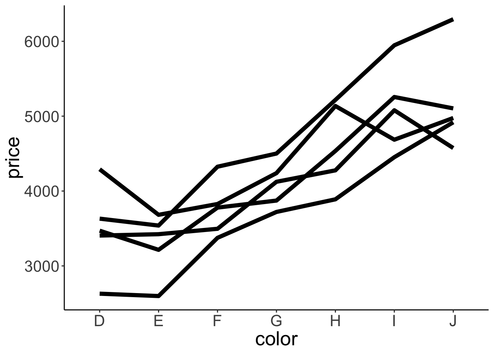
ggplot(data = diamonds, aes(x = color, y = price, group = cut, color = cut))+
stat_summary(fun.y = "mean", geom = "line", size = 2)
I’ve made the lines a little thicker here by setting the size argument to 2.
Grouping is particularly handy for bar plots. Let’s take a look at how the average price of diamonds looks like taking into account both cut and color (I know – exciting times!). Let’s put the color on the x-axis and then group by the cut.
ggplot(data = diamonds, aes(x = color, y = price, group = cut, color = cut))+
stat_summary(fun.y = "mean", geom = "bar")
That’s a fail! Several things went wrong here. First, all the bars are gray and only their outline is colored differently. Instead we want the bars to have a different color. For that we need to specify the fill argument rather than the color argument. But it’s worse. The bars currently are shown on top of each other. Instead, we’d like to put them next to each other. Here is how to do that:
ggplot(data = diamonds, aes(x = color, y = price, group = cut, fill = cut))+
stat_summary(fun.y = "mean", geom = "bar", position = position_dodge())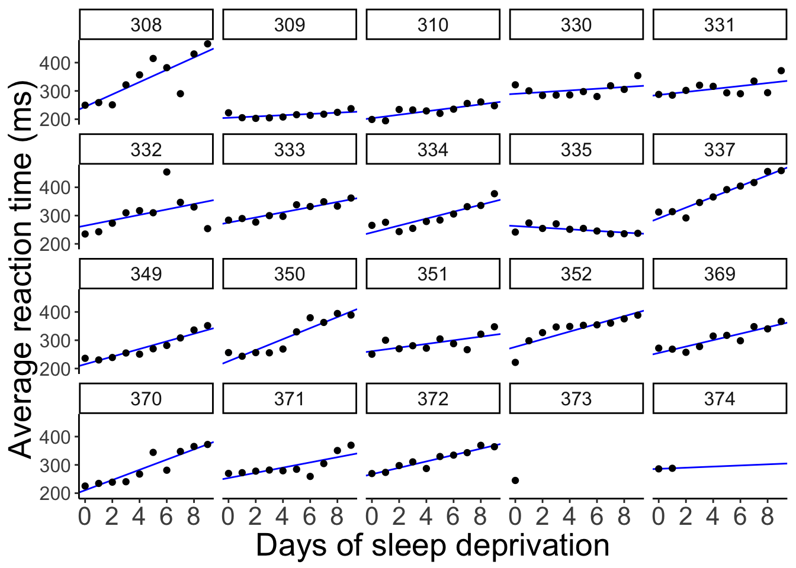
Neato! We’ve changed the color argument to fill, and have added the position = position_dodge() argument to the stat_summary() call. This argument makes it such that the bars are nicely dodged next to each other. Let’s add some error bars just for kicks.
ggplot(data = diamonds, aes(x = color, y = price, group = cut, fill = cut))+
stat_summary(fun.y = "mean", geom = "bar", position = position_dodge(width = 0.9), color = "black")+
stat_summary(fun.data = "mean_cl_boot", geom = "linerange", position = position_dodge(width = 0.9))
Voila! Now with error bars. Note that we’ve added the width = 0.9 argument to position_dodge(). Somehow R was complaining when this was not defined for geom “linerange”. I’ve also added some outline to the bars by including the argument color = "black" when plotting the bars. I think it looks nicer this way.
2.6.6 Making facets
Having too much information in a single plot can be overwhelming. The previous plot is already pretty busy. Facets are a nice way of spliting up plots and showing information in separate panels.
Let’s take a look at how wide these diamonds tend to be. The width in mm is given in the y column of the diamonds data frame. We’ll make a histogram first.
ggplot(data = diamonds, aes(x = y))+
geom_histogram()
#> `stat_bin()` using `bins = 30`. Pick better value with `binwidth`.
That looks bad! Let’s pick a different value for the width of the bins in the histogram.

Still bad. There seems to be an outlier diamond that happens to be almost 60 mm wide, while most of the rest is much narrower. One option would be to remove the outlier from the data before plotting it. But generally, we don’t want to make new data frames. Instead, let’s just limit what data we want to show in the plot.
ggplot(data = diamonds, aes(x = y))+
geom_histogram(binwidth = 0.1)+
coord_cartesian(xlim = c(3, 10))
I’ve used the coord_cartesian() function to restrict the range of data we’d like to show by passing a minimum and maximum to the xlim argument. This looks better now.
Instead of histograms, we can also plot a density fitted to the distribution.

Looks pretty similar to our histogram above! Just like we can play around with the binwidth of the histogram, we can change the smoothing bandwidth of the kernel that is used to create the histogram. Here is a histogram with a much wider bandwidth:

I promised that this section was about making facets, right? We’re getting there! Let’s first take a look at how wide diamonds of different color are. I promise we’ll look at some actually interesting data sets very soon – for now, we mostly just want to figure out how to plot stuff. We can use grouping to make this happen.
ggplot(data = diamonds, aes(x = y, group = color, fill = color))+
geom_density(bw = 0.2, alpha = 0.2)+
coord_cartesian(xlim = c(3, 10))
OK! That’s a little tricky to tell apart. Notice that I’ve specified the alpha argument in the geom_density() function so that the densities in the front don’t completely hide the densities in the back. But this still looks a little busy. Instead of grouping, let’s put the densities for the different colors, in separate panels. That’s what facetting allows you to do.
ggplot(data = diamonds, aes(x = y, fill = color))+
geom_density(bw = 0.2)+
facet_grid(cols = vars(color))+
coord_cartesian(xlim = c(3, 10))
Now we have the densities next to each other in separate panels. I’ve removed the alpha argument since the densities aren’t overlapping anymore. To make the different panels, I used the facet_grid() function and specified that I want separate columns for the different colors (cols = vars(color)). What’s the deal with vars()? Why couldn’t we just write facet_grid(cols = color) instead? The short answer is: that’s what the function wants. The long answer is: long. (We’ll learn more about this later in the course.) So, what does this plot actually show us? Well, J-colored diamonds tend to be wider than D-colored diamonds. Fascinating!
Of course, we could go completely overboard with facets and groups. So let’s do it! Let’s look at how the average price (somewhat more interesting) varies as a function of color, cut, and clarity. We’ll put color on the x-axis, and make separate rows for cut and columns for clarity.
ggplot(data = diamonds, aes(y = price, x = color, fill = color))+
stat_summary(fun.y = "mean", geom = "bar", color = "black")+
stat_summary(fun.data = "mean_cl_boot", geom = "linerange")+
facet_grid(rows = vars(cut), cols = vars(clarity))
#> Warning: Removed 5 rows containing missing values (geom_linerange).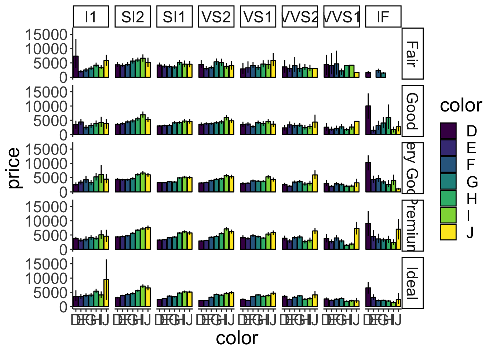
Figure ?? is stretching it in terms of how much information it presents. But it gives you a sense for how to combine the differnet bits and pieces we’ve learned so far.
2.6.7 More on aesthetics
ggplot2 allows you to specify the plot aesthetics in different ways.
ggplot(data = diamonds, aes(x = carat, y = price, color = color))+
geom_point()+
geom_smooth(method = "lm")
Here, for example, I have defined all the aesthetics at the top level, that is, directly within the ggplot() function. This means that the aesthetics apply to all the functions afterwards. In this case, the geom_point() and the geom_smooth() functions. The geom_smooth() function produces separate best-fit regression lines for each different color.
But what if we only wanted to show one regression line instead that applies to all the data? Here is one way of doing so:
ggplot(data = diamonds, aes(x = carat, y = price))+
geom_point(aes(color = color))+
geom_smooth(method = "lm")
Here, I’ve moved the color aesthetic into the geom_point() function call. Now, the x and y aesthetics still apply to both the geom_point() and the geom_smooth() function call, but the color aesthetic applies only to geom_point(). Alternatively, we can simply overwrite global aesthetics within local function calls.
ggplot(data = diamonds, aes(x = carat, y = price, color = color))+
geom_point()+
geom_smooth(method = "lm", color = 'black')
Here, I’ve set color = 'black' within the geom_smooth() function, and now only one global regression line is displayed.
2.7 Overview of different plot types for different things
Let’s briefly take stock of what we’ve learned so far.
2.7.1 Proportions
2.7.1.1 Pie charts

Figure 2.4: Finally a pie chart that makes sense.
Pie charts have a bad reputation. And there are indeed a number of problems with pie charts:
- proportions are difficult to compare
- don’t look good when there are many categories
ggplot(data = diamonds, aes(x = "cut", y = stat(count / sum(count)), fill = cut))+
geom_bar()+
coord_polar("y", start=0)+
theme_void()
2.7.1.2 Waffle plot
# devtools::install_github("hrbrmstr/waffle") #install the github version of the package
# library(waffle)
df.plot = diamonds %>%
count(cut) %>%
mutate(n = round(n/1000)) #transform counts
waffle(
df.plot,
rows = 3, #number of rows
legend_pos = "bottom", #legend position
title = "Number of different cuts (1000 per square)"
)+
guides(fill = guide_legend(nrow = 1)) #set number of rows in legend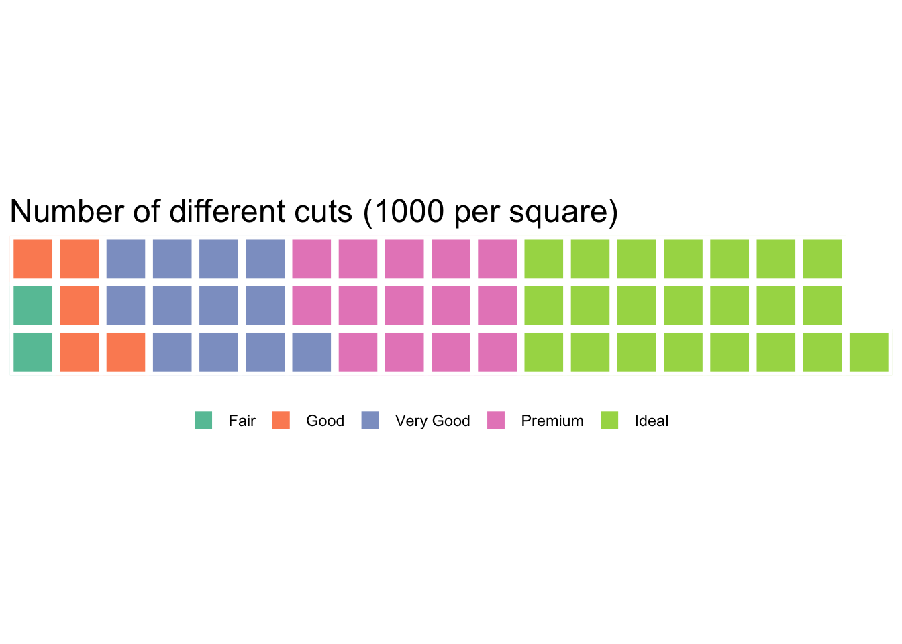
2.7.2 Comparisons
Often we want to compare the data from many different conditions. And sometimes, it’s also useful to get a sense for what the individual participant data look like. Here is a plot that achieves both.
ggplot(data = diamonds[1:200,], aes(x = color, y = price))+
geom_point(alpha = 0.2, position = position_jitter(width = 0.1, height = 0), size = 2)+ # individual data points (jittered horizontally)
stat_summary(fun.data = "mean_cl_boot", geom = "linerange", color = "black", size = 1)+ # error bars
stat_summary(fun.y = "mean", geom = "point", shape = 21, fill = "red", color = "black", size = 4) # means
This plot shows means, bootstrapped confidence intervals, and individual data points. I’ve used two tricks to make the individual data points easier to see.
1. I’ve set the alpha attribute to make the points somewhat transparent.
2. I’ve used the position_jitter() function to jitter the points horizontally.
Note that I’m only plotting the first 200 entries of the data here by setting data = diamonds[1:200,] in gpplot().
Another way to get a sense for the distribution of the data is to use box plots.
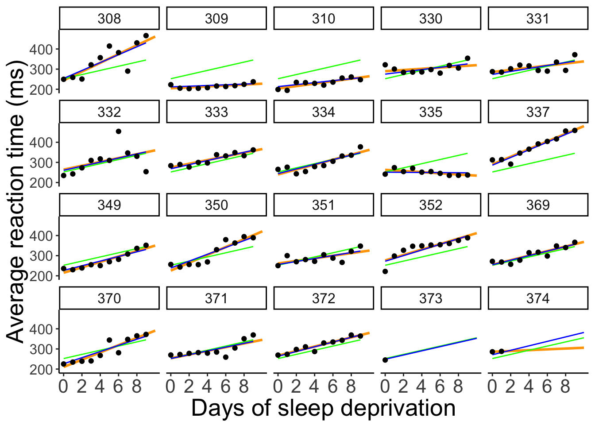
What do boxplots show? Here adapted from help(geom_boxplot()):
The boxplots show the median as a horizontal black line. The lower and upper hinges correspond to the first and third quartiles (the 25th and 75th percentiles) of the data. The whiskers (= black vertical lines) extend from the top or bottom of the hinge by at most 1.5 * IQR (where IQR is the inter-quartile range, or distance between the first and third quartiles). Data beyond the end of the whiskers are called “outlying” points and are plotted individually.
Personally, I’m not a big fan of boxplots and find them difficult to interpret. And many data sets are consistent with the same boxplot.
Boxplot distributions
The figure above shows three different distributions that each correspond to the same boxplot.
If there is not too much data, I recommend to plot jittered individual data points instead. If you do have a lot of data points, then violin plots can be helpful.
Boxplot distributions
The figure above shows how the same raw data is represented as jittered dots, boxplots, and violin plots.
We make violin plots like so:

Violin plots are good for detecting bimodal distributions. They work well when: 1. You have many data points 2. The data is continuous
Violin plots don’t look good for Likert-scale data. Here is a simple example:
set.seed(1)
data = data.frame(rating = sample(x = 1:7, prob = c(0.1, 0.4, 0.1, 0.1, 0.2, 0, 0.1), size = 300, replace = T))
ggplot(data = data, aes(x = 'Likert', y = rating))+
geom_violin()
This represents a vase much better than it represents the data.
Here are some other options for representing distributions.
- beeswarm plot: https://github.com/eclarke/ggbeeswarm
2.7.3 Bee swarm plots
# install.packages('ggbeeswarm')
library('ggbeeswarm')
set.seed(1)
data = data.frame(rating = rnorm(n = 300, mean = 0, sd = 1))
ggplot(data = data, aes(x = 'Likert', y = rating))+
# geom_beeswarm(cex = 2, priority = 'density')
# geom_jitter()
geom_violin()+
geom_quasirandom()
Nice Manta Ray …
2.7.4 Relationships
Scatter plots are great for looking at the relationship between two continuous variables. Let’s make a busy plot that looks at the relationship between carat and price again. This time, I’ll show you how to add regression lines to the plot, too. We’ll learn later in the course what these lines actually mean.
Let’s start with the plot from above:

Let’s separate the colors by using facets.
ggplot(data = diamonds, aes(x = carat, y = price, color = color))+
geom_point()+
facet_grid(rows = vars(color))
And let’s add some regression lines.
ggplot(data = diamonds, aes(x = carat, y = price, color = color))+
geom_point()+
geom_smooth(method = "lm", color = 'black')+
facet_grid(rows = vars(color))
2.7.5 Raster plots
These are useful for looking how a variable of interest varies as a function of two other variables. For example, when we are trying to fit a model with two parameters, we might be interested to see how well the model does for different combinations of these two parameters. Here, we’ll plot what carat values diamonds of different color and clarity have.
ggplot(data = diamonds, aes(x = color, y = clarity, z = carat))+
stat_summary_2d(fun = "mean", geom = "tile")
Not too bad. Let’s add a few tweaks to make it look nicer.
ggplot(data = diamonds, aes(x = color, y = clarity, z = carat))+
stat_summary_2d(fun = "mean", geom = "tile", color = "black")+
scale_fill_gradient(low = "white", high = "black")
What I’ve done here is that I’ve added some outlines to the tiles by specifying color = "black" in geom_tile(). And then I’ve changed the scale for the fill gradient. I’ve defined the color for the low value to be “white”, and for the high value to be “black.” Finally, I’ve changed the lower and upper limit of the scale via the limits argument. Looks much better now! We see that diamonds with clarity I1 tend to have the highest carat values on average, and diamonds that have the color J.
2.7.6 Temporal data
df.plot = txhousing %>%
filter(city %in% c("Dallas", "Fort Worth", "San Antonio", "Houston")) %>%
mutate(city = factor(city, levels = c("Dallas", "Houston", "San Antonio", "Fort Worth")))
ggplot(data = df.plot, aes(x = year, y = median, color = city, fill = city))+
geom_hline(yintercept = 100000, linetype = 2, alpha = 0.2)+
geom_hline(yintercept = 150000, linetype = 2, alpha = 0.2)+
geom_hline(yintercept = 200000, linetype = 2, alpha = 0.2)+
stat_summary(fun.data = mean_cl_boot, geom = 'ribbon', alpha = 0.2, linetype = 0)+
stat_summary(fun.y = mean, geom = 'point')+
stat_summary(fun.y = mean, geom = 'line')+
scale_y_continuous(breaks = seq(from = 100000, to = 250000, by = 50000),
labels = str_c("$", seq(from = 100, to = 250, by = 50), "K"))+
labs(x = "Year", y = "Median house sale price", title = "Change of median house sale price in Texas",
fill = "", color = "")+
theme(title = element_text(size = 16),
legend.position = c(0.15,0.75)
)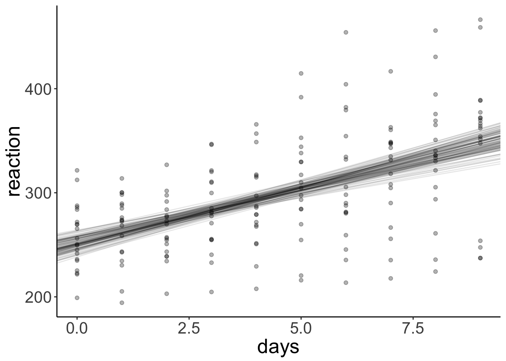
# without legend
df.plot = txhousing %>%
filter(city %in% c("Dallas", "Fort Worth", "San Antonio", "Houston")) %>%
mutate(city = factor(city, levels = c("Dallas", "Houston", "San Antonio", "Fort Worth")))
df.text = df.plot %>%
filter(year == max(year)) %>%
group_by(city) %>%
summarize(year = mean(year) + 0.2,
median = mean(median))
ggplot(data = df.plot, aes(x = year, y = median, color = city, fill = city))+
geom_hline(yintercept = seq(from = 100000, to = 250000, by = 50000), linetype = 2, alpha = 0.2)+
stat_summary(fun.data = mean_cl_boot, geom = 'ribbon', alpha = 0.2, linetype = 0)+
stat_summary(fun.y = mean, geom = 'point')+
stat_summary(fun.y = mean, geom = 'line')+
geom_text(data = df.text, aes(label = city), hjust = 0, size = 5)+
scale_y_continuous(breaks = seq(from = 100000, to = 250000, by = 50000),
labels = str_c("$", seq(from = 100, to = 250, by = 50), "K"))+
scale_x_continuous(breaks = seq(from = 2000, to = 2015, by = 5),
limits = c(2000, 2018))+
labs(x = "Year", y = "Median house sale price", title = "Change of median house sale price in Texas",
fill = "", color = "")+
theme(title = element_text(size = 16),
legend.position = "none"
)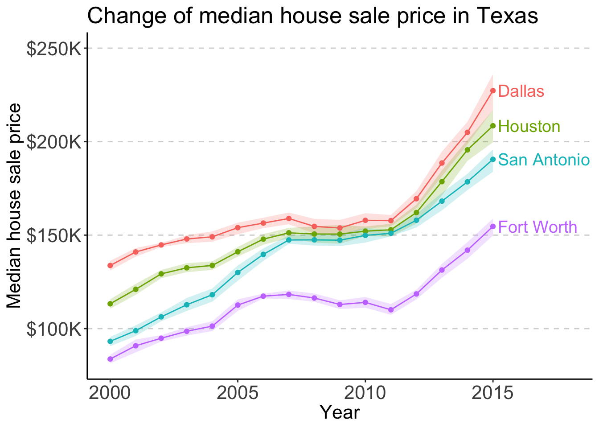
2.8 Customizing plots
So far, we’ve seen a number of different ways of plotting data. Now, let’s look into how to customize the plots. For example, we may wanta to change the axis labels, add a title, increase the font size. ggplot2 let’s you customize almost anything.
Let’s start pretty simple.
ggplot(data = diamonds, aes(x = cut, y = price))+
stat_summary(fun.y = "mean", geom = "bar", color = "black")+
stat_summary(fun.data = "mean_cl_boot", geom = "linerange")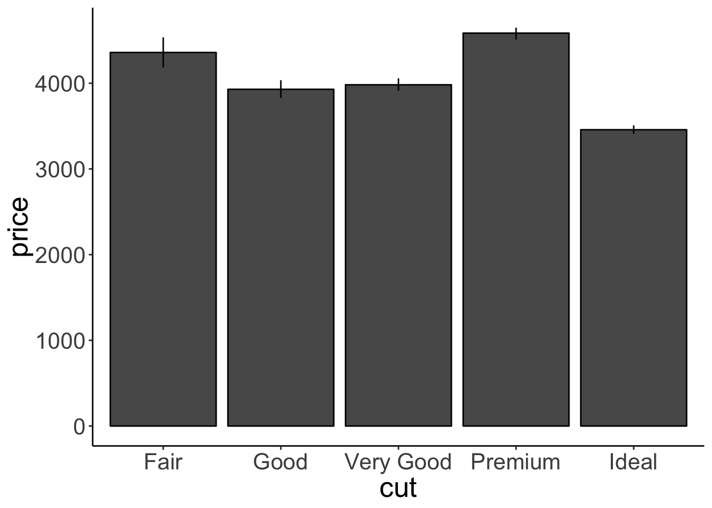
This plot shows the average price for diamonds with a different quality of the cut, as well as the bootstrapped confidence intervals. Here are some things we can do to make it look nicer.
ggplot(data = diamonds, aes(x = cut, y = price))+
stat_summary(fun.y = "mean", geom = "bar", color = "black", fill = "lightblue", width = 0.85)+ #change color of the fill, make a little more space between bars by setting their width
stat_summary(fun.data = "mean_cl_boot", geom = "linerange", size = 1.5)+ #make error bars thicker
labs(
title = "Price as a function of quality of cut",
subtitle = "Note: The price is in US dollars",
tag = "A",
x = "Quality of the cut",
y = "Price")+ #added a title, subtitle, and changed axis labels
theme_classic()+ #use a simple theme
scale_y_continuous(breaks = seq(from = 0, to = 4000, by = 2000),
labels = seq(from = 0, to = 4000, by = 2000))+ #adjusted what to show on the y-axis
coord_cartesian(xlim = c(0.25, 5.75), ylim = c(0, 5000), expand = F)+ #adjusted the range of both axes
theme(
text = element_text(size = 20), #adjust the text size
axis.title.x = element_text(margin = margin(t = 0.2, unit = "inch")), #added some space at top of x-title
axis.title.y = element_text(margin = margin(r = 0.1, unit = "inch")), #added some space t the right of y-title
plot.subtitle = element_text(margin = margin(b = 0.3, unit = "inch"),
color = "gray70"), #added some space underneath the subtitle, and made it gray,
plot.tag = element_text(face = "bold"), #make the plot tag bold
plot.tag.position = c(0.05, 0.99) #move it a little
)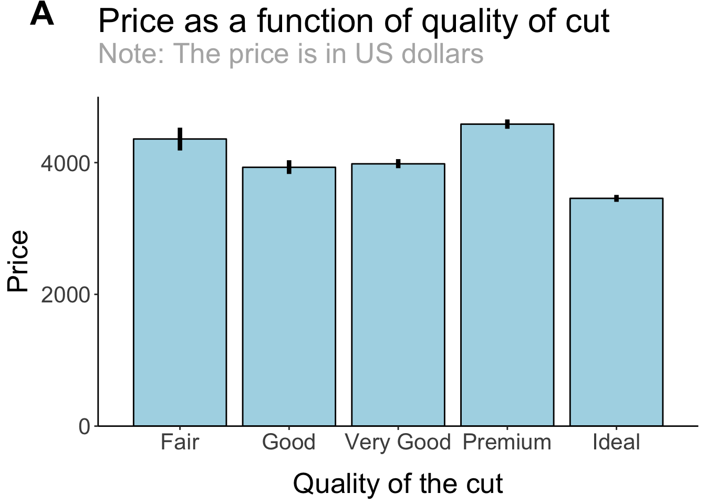
I’ve tweaked quite a few things here.
2.8.1 Changing the order of things
Sometimes we don’t have a natural ordering of our independent variable. In that case, it’s nice to show the data in order.
ggplot(data = diamonds, aes(x = reorder(cut, price), y = price))+
stat_summary(fun.y = "mean", geom = "bar", color = "black", fill = "lightblue", width = 0.85)+
stat_summary(fun.data = "mean_cl_boot", geom = "linerange", size = 1.5)+
theme_classic()+
labs(x = "cut")
The reorder() function helps us to do just that. Now, the results are ordered according to price. To show the results in descending order, I would simply need to write reorder(cut, -price) instead.
2.8.2 Dealing with legends
- don’t show legends for certain elements …
- rearrange where the legend is shown
- always ask yourself: do i need a legend?
2.8.3 Customizing themes
For a given project, I often want all of my plots to share certain visual features such as the font type, font size, how the axes are displayed, etc. Instead of defining these for each individual plot, I can set a theme at the beginning of my project so that it applies to all the plots in this file. To do so, I use the theme_set() command:
Here, I’ve just defined that I want to use theme_classic() for all my plots, and that the text size should be 20. For any individual plot, I can still overwrite any of these defaults.
2.9 Saving plots
To save plots, use the ggsave() command. Personally, I prefer to save my plots as pdf files. This way, the plot looks good no matter what size you need it to be. This means it’ll look good both in presentations as well as in a paper. You can save the plot in any format that you like.
I strongly recommend to use a relative path to specify where the figure should be saved. This way, if you are sharing the project with someone else via Stanford Box, Dropbox, or Github, they will be able to run the code without errors.
Here is an example for how to save one of the plots that we’ve created above.
ggplot(data = diamonds, aes(x = cut, y = price))+
stat_summary(fun.y = "mean", geom = "bar", color = "black")+
stat_summary(fun.data = "mean_cl_boot", geom = "linerange")
Here, I’m saving the plot in the figures folder and it’s name is diamond_plot.pdf. I also specify the width and height as the plot in inches (which is the default unit).
2.10 Creating figure panels
Sometimes, we want to create a figure with several subfigures, each of which is labeled with a), b), etc. We have already learned how to make separate panels using facet_wrap() or facet_grid(). The R package patchwork makes it very easy to combine multiple plots.
Let’s first install the package. It’s not on CRAN yet (where most of the R packages live), but we can install it directly from the github repository.
Then we load the package and use it. First, I’m just combining a few plots that we’ve made above into one.
library("patchwork")
# first plot
p1 = ggplot(data = diamonds, aes(x = y, fill = color))+
geom_density(bw = 0.2, show.legend = F)+
facet_grid(cols = vars(color))+
coord_cartesian(xlim = c(3, 10), expand = F)+ #setting expand to FALSE removes any padding on x and y axes
labs(title = "Width of differently colored diamonds",
tag = "A")
# second plot
p2 = ggplot(data = diamonds, aes(x = color, y = clarity, z = carat))+
stat_summary_2d(fun = "mean", geom = "tile")+
labs(title = "Carat values",
subtitle = "For different color and clarity",
x = 'width in mm',
tag = "B")
# third plot
p3 = ggplot(data = diamonds, aes(x = cut, y = price))+
stat_summary(fun.y = "mean", geom = "bar", color = "black", fill = "lightblue", width = 0.85)+
stat_summary(fun.data = "mean_cl_boot", geom = "linerange", size = 1.5)+
scale_x_discrete(labels = c('fair', 'good', 'very\ngood', 'premium', 'ideal'))+
labs(
title = "Price as a function of cut",
subtitle = "Note: The price is in US dollars",
tag = "C",
x = "Quality of the cut",
y = "Price")+
coord_cartesian(xlim = c(0.25, 5.75), ylim = c(0, 5000), expand = F)
# combine the plots
p1 + (p2 + p3) +
plot_layout(ncol = 1) &
theme_classic() &
theme(plot.tag = element_text(face = "bold", size = 20)
)
Not a perfect plot yet, but you get the idea. To combine the plots, we defined that we would like p2 and p3 to be displayed in the same row using the () syntax. And we specified that we only want one column via the plot_layout() function. We also applied the same theme_classic() to all the plots using the & operator, and formatted how the plot tags should be displayed. For more info on how to use patchwork, take a look at the readme on the github page.
Other packages that provide additional functionality for combining multiple plots into one are gridExtra and cowplot. You can find more information on how to lay out multiple plots here.
An alternative way for making these plots is to use Adobe Illustrator, Powerpoint, or Keynote. However, you want to make changing plots as easy as possible. Adobe Illustrator has a feature that allows you to link to files. This way, if you change the plot, the plot within the illustrator file gets updated automatically as well.
If possible, it’s much better to do everything in R though so that your plot can easily be reproduced by someone else.
2.11 Peeking behind the scenes
Sometimes it can be helpful for debugging to take a look behind the scenes. Silently, ggplot2 computes a data frame based on the information you pass to it. We can take a look at the data frame that’s underlying the plot.
p = ggplot(data = diamonds, aes(x = color, y = clarity, z = carat))+
stat_summary_2d(fun = "mean", geom = "tile", color = "black")+
scale_fill_gradient(low = "white", high = "black")
print(p)
I’ve called the ggplot_build() function on the ggplot2 object that we saved as p. I’ve then printed out the data associated with that plot object. The first thing we note about the data frame is how many entries it has, 56. That’s good. This means there is one value for each of the 7 x 8 grids. The columns tell us what color was used for the fill, the value associated with each row, where each row is being displayed (x and y), etc.
If a plot looks weird, it’s worth taking a look behind the scenes. For example, one thing we thing we could have tried is the following (in fact, this is what I tried first):
p = ggplot(data = diamonds, aes(x = color, y = clarity, fill = carat))+
geom_tile(color = "black")+
scale_fill_gradient(low = "white", high = "black")
print(p)
Why does this plot look different from the one before? What went wrong here? Notice that the data frame associated with the ggplot2 object has 53940 rows. So instead of plotting means here, we plotted all the individual data points. So what we are seeing here is just the top layer of many, many layers.
2.12 Defining snippets
Often, we want to create similar plots over and over again. One way to achieve this is by finding the original plot, copy and pasting it, and changing the bits that need changing. Another more flexible and faster way to do this is by using snippets. Snippets are short pieces of code that
Here are some snippets I use:
snippet snbar
ggplot(data = ${1:data}, aes(x = ${2:x}, y = ${3:y}))+
stat_summary(fun.y = "mean", geom = "bar", color = "black")+
stat_summary(fun.data = "mean_cl_boot", geom = "linerange")
snippet sngg
ggplot(data = ${1:data}, aes(${2:aes}))+
${0}
snippet sndf
${1:data} = ${1:data} %>%
${0}To make a bar plot, I now only need to type snbar and then hit TAB to activate the snippet. I can then cycle through the bits in the code that are marked with ${Number:word} by hitting TAB again.
In RStudio, you can change and add snippets by going to Tools –> Global Options… –> Code –> Edit Snippets. Make sure to set the tick mark in front of Enable Code Snippets (see below).
Code snippets
To edit code snippets faster, run this command from the usethis package. Make sure to install the package first.
This command opens up a separate tab in RStudio called r.snippets so that you can make new snippets and adapt old ones more quickly. Take a look at the snippets that RStudio already comes with. And then, make some new ones! By using snippets you will be able to avoid typing the same code over and over again, and you won’t have to memorize as much, too.
2.13 Making animations
Animated plots can be a great way to illustrate your data in presentations. The R package gganimate lets you do just that.
Again, we install the package gganimate directly from the github repository.
Here is an example showing how to use it.
ggplot(gapminder, aes(x = gdpPercap, y = lifeExp, size = pop, colour = country)) +
geom_point(alpha = 0.7, show.legend = FALSE) +
geom_text(data = gapminder %>% filter(country %in% c("United States", "China", "India")), aes(label = country), color = 'black', vjust = -0.75, show.legend = FALSE)+
scale_colour_manual(values = country_colors) +
scale_size(range = c(2, 12)) +
scale_x_log10() +
theme_classic()+
theme(text = element_text(size = 24))+
# Here comes the gganimate specific bits
labs(title = 'Year: {frame_time}', x = 'GDP per capita', y = 'life expectancy') +
transition_time(year) +
ease_aes('linear')
This takes a while to run but it’s worth the wait. The plot shows the relationship between GDP per capita (on the x-axis) and life expectancy (on the y-axis) changes across different years for the countries of different continents. The size of each dot represents the population size of the respective country. And different countries are shown in different colors. This animation is not super useful yet in that we don’t know which continents and countries the different dots represent. I’ve added a label to the United States, China, and India.
Note how little is required to define the gganimate-specific information! The {frame_time} variable changes the title for each frame. The transition_time() variable is set to year, and the kind of transition is set as ‘linear’ in ease_aes(). I’ve saved the animation as a gif in the figures folder.
We won’t have time to go into more detail here but I encourage you to play around with gganimate. It’s fun and looks cool!
2.14 Shiny apps
The package shiny makes it relatively easy to create interactive plots that can be hosted online. Here is a gallery with some examples.
Demonstrate the addin
2.15 Residuals in a regression model
library(broom)
d <- lm(mpg ~ hp, data = mtcars) %>%
augment()
ggplot(d, aes(x = hp, y = mpg)) +
geom_smooth(method = "lm", se = FALSE, color = "lightgrey") +
geom_segment(aes(xend = hp, yend = .fitted), alpha = .2) + # Note `.fitted`
geom_point(aes(alpha = abs(.resid)), show.legend = F) + # Note `.resid`
geom_point(aes(y = .fitted), shape = 1) + # Note `.fitted`
theme_classic()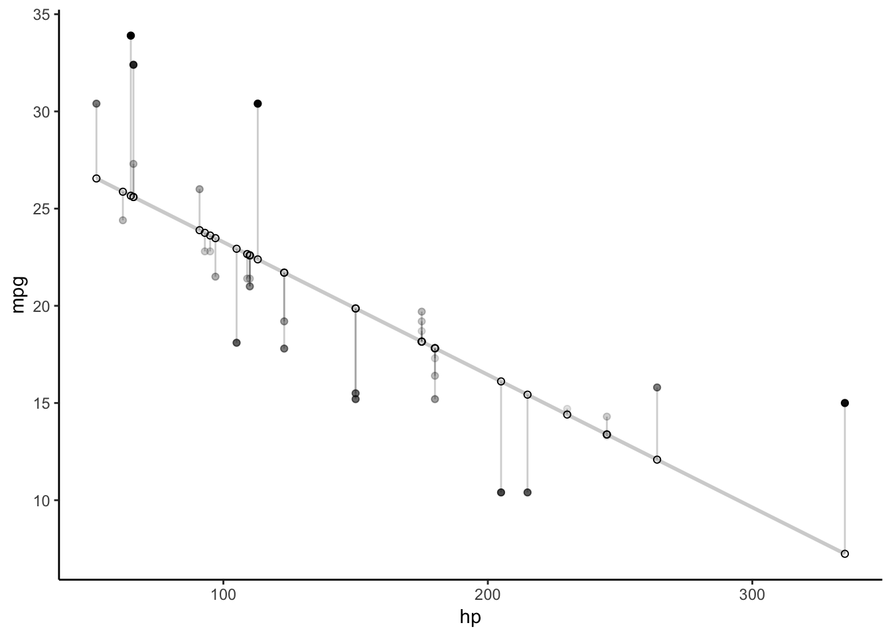